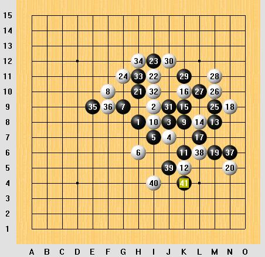
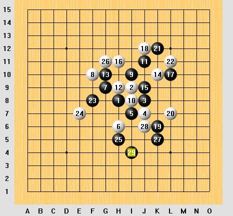
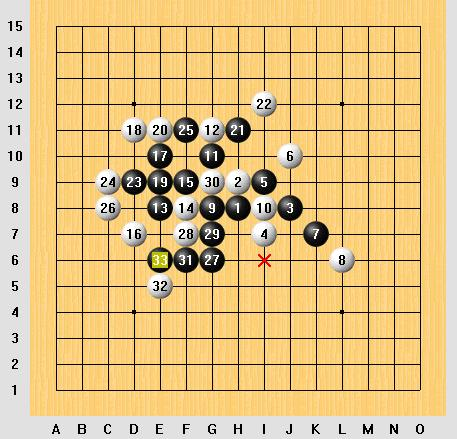
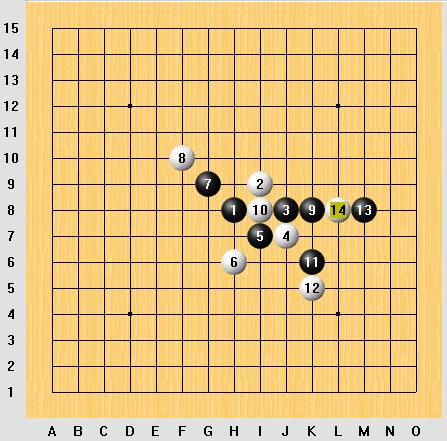
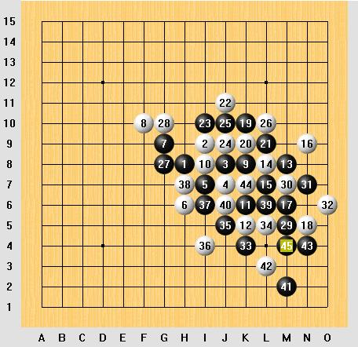

经典骗招.恒星
#1 经典骗招.恒星 作者：逆刃 发表时间：2008-7-3 16:11:51
本文链接：http://user.qzone.qq.com/51313059/blog/1214833860
近日去浙江论坛,看到去年的浙江棋谱,去年的对局我下载出来,突然发现,这里有恒星开局,而且是一轮有2盘,
为什么都下这个变化呢,这里,的确是有问题,
我们先看比赛的棋局:
第一盘 黑方:陈新
白方:易伊神 用时:
我们看到,.虽然黑胜了,但是呢,这里白后面明显有漏算.到22手,基本上平衡

=======上图对应的爱五子棋谱代码如下，以便你拆解：========
h8i9j8j7i7h6g9f10k8i8k6k5m8l8k9k10l7n9m6n5h10i11i12g11m9m10l10m11k11j12j9i10h11h12e9f9n6l6j5i4k4
======================================================
第二盘:
黑方:易海力 白方:薛文曦
从这盘,我们看到,.9手黑变了,因为没有完全是把握黑胜.那么到14手这妙手后,16手,局面很平衡.如果26手不急的话,这棋还是白好,因为白抢了外围

=======上图对应的爱五子棋谱代码如下，以便你拆解：========
h8i9j8j7i7h6g9f10i10i8j11h9g10k10j9h11l10j12k6l7k12l11f8e7h5g11k5j6i4
======================================================
从这两盘棋,我们思考,这个白其实战术上是很成功的,如果说细心一点,这两盘,黑是胜不了的
那么恒星是黑好的局,而且对于这个4,我们一般认为不是最强,
应该说,黑如果下对,就可以必胜!
我们看一下两个局面.恒星和金星,他们的区别,金星 这个都是定式 黑胜

=======上图对应的爱五子棋谱代码如下，以便你拆解：========
h8h9j8i7i9j10k7l6g8i8g10g11e8f8f9d7e10d11e9e11h11i12d9c9f11c8g6f7g7g9f6e5e6
我们再看下面的恒星,他们的区别就是,离盘端的距离,少2格,这样黑是不行的,正是这个骗招的问题所在

=======上图对应的爱五子棋谱代码如下，以便你拆解：========
h8i9j8j7i7h6g9f10k8i8k6k5m8l8
======================================================
那我们就要想一个问题,到底这个黑还有没有其他胜法呢,其实呢.
这个早就有定式可以胜,那么,这个胜是不是很简单,这里明确的说,不是,为什么呢,
如果不是那么熟悉,我相信,这个次序,以及到最后一步胜是非常难的. 下面,就是这个定式的正确下法

=======上图对应的爱五子棋谱代码如下，以便你拆解：========
h8i9j8j7i7h6g9f10k8i8k6k5m8l8l7n9m6n5k10k9l9j11i10j9j10l10g8g10m5m7n7o6k4l5j5i4i6h7l6j6m2l3n4k7m4
======================================================
从这里,我们看出,不管是什么样的棋.都是需要人思考的，有些人说,五子棋接近“终结”了，
那么，谁能说，五子棋谁就是不败的呢？
#2 Re:经典骗招.恒星 作者：百医天使 发表时间：2008-7-3 16:13:44
没图怎么看？#3 Re:经典骗招.恒星 作者：逆刃 发表时间：2008-7-3 16:15:47
不会是QQ的图片又不显示吧。我上传好了。稍等。#4 Re:经典骗招.恒星 作者：17号蓝星仔 发表时间：2008-7-4 0:06:04
我可以看见图片#5 Re:经典骗招.恒星 作者：叵 发表时间：2008-7-15 16:45:49
细细的看ing...
#6 Re:经典骗招.恒星 作者：笑三少 发表时间：2008-8-10 22:38:54
第二盘:
黑方:易海力 白方:薛文曦
黑胜么。。。白上面有杀棋
#7 Re:经典骗招.恒星 作者：疏星终结 发表时间：2008-8-11 0:40:30
高手说骗着使人落后，不会去动脑子下。。。。。
#8 Re:经典骗招.恒星 作者：上山下乡为读书 发表时间：2008-8-17 20:55:10
o 长见识了，谢谢！#9 Re:经典骗招.恒星 作者：启蒙 发表时间：2009-3-20 17:02:11
过去老听说有恒星的骗招利用盘端的，原来就是这个啊
谢谢高飞老师！和转贴的老师！
#10 Re:经典骗招.恒星 作者：自来水 发表时间：2009-3-20 21:19:38
确实啊，第二盘到此应是白胜
=======上图对应的爱五子棋谱代码如下，以便你拆解：========
h8i9j8j7i7h6g9f10i10i8j11h9g10k10j9h11l10j12k6l7k12l11f8e7h5g11k5j6i4h12k9m11k7k8k4k3l13m14i13h10h13e11f11e9d8e13f12e10
======================================================
LZ自己仔细看一下……
#11 Re:经典骗招.恒星 作者：瞬间的微笑 发表时间：2009-7-16 8:14:06
谢谢分析，，认真看过你发的棋谱了，，很好！#12 Re:Re:经典骗招.恒星 作者：慕容晓文 发表时间：2009-10-15 17:16:41
引用：
原文由 自来水 发表于 2009-3-20 21:19:38 :确实啊，第二盘到此应是白胜
=======上图对应的爱五子棋谱代码如下，以便你拆解：========
h8i9j8j7i7h6g9f10i10i8j11h9g10k10j9h11l10j12k6l7k12l11f8e7h5g11k5j6i4h12k9m11k7k8k4k3l13m14i13h10h13e11f11e9d8e13f12e10
======================================================LZ自己仔细看一下……
你说的很对，呵呵
这局的结果是白胜，没错……26不是急不急的问题，26就是必胜，呵呵
这局的关键手就是14手和26手